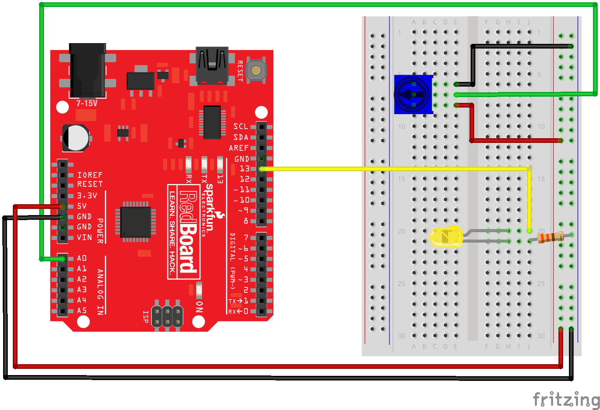

Python and Matplotlib can be used to create static 2D plots. But it Matplotlib can also be used to create dynamic auto-updating animated plots. In this post, you learn how to create a live auto-updating animated plot using Python and Matplotlib.
Pre-requisits
To follow along with this tutorial, a couple of pre-requisites need to be in place:
- Python needs to be installed on your computer. I recommend installing the Anaconda Distribution of Python.
- You are running a version of Python 3.6 or above. Python version 3.7 or 3.8 are more up-to-date and recommended.
- You know how to open the Anaconda Prompt on Windows10 or know how to open a terminal on MacOS or Linux.
- You have a general idea of what Python packages are and have installed a Python package before using conda or pip.
- You know how to create a text file in an editor or an IDE (integrated development environment) such as Visual Studio Code, PyCharm, Sublime Text, vim, emacs, etc. I will be using Visual Studio Code (also called VS Code) in this post, but any regular code editor will work.
- You know how to run a Python program (execute a .py file) using a terminal prompt, like the Anaconda Prompt, or know how to run a Python program using your IDE.
- You have a general understanding of how files are organized on your computer into directories and sub-directories.
- You have some familiarity with navigating through directories and files using a terminal or the Anaconda Prompt with commands like
cd,cd ..,dirorls, andmdkir.
Now that the pre-requisites are out of the way, let's start coding!
Set up a Python virtual environment
To start the coding process, we will set up a new Python virtual environment.
Real Python has a good introduction to virtual environments and why to use them.
I recommend undergraduate engineers use the Anaconda distribution of Python which comes with the Anaconda Prompt. You can create a new virtual environment by opening the Anaconda Prompt and typing:
Using the Anaconda Prompt:
> mkdir live_plot
> cd live_plot
> conda create -y -n live_plot python=3.7
Alternatively, on MacOS or Linux, a virtual environment can be set up with a terminal prompt and pip (the Python package manager).
Using a terminal on MacOS or Linux:
$ mkdir live_plot
$ cd live_plot
$ python3 -m venv venv
Install Python packages
Now that we have a new clean virtual environment with Python 3 installed, we need to install the necessary packages that we'll use to create our plots.
Using the Anaconda Prompt, activate the live_plot virtual environment and use conda to install the following Python packages. Ensure the virtual environment you created above is activate when the packages are installed.
> conda activate live_plot
(live_plot)> conda install -y matplotlib requests pyserial
Alternatively, if you are using MacOS or Linux, the packages can be installed with a terminal pip:
$ source venv/bin/activate
(venv) $ pip install matplotlib
(venv) $ pip install requests
(venv) $ pip install pyserial
Create a static line plot
Before we create a live animated auto-updating plot, let's first create simpler static, non-moving line plot. Our live plots will look a lot like this first static plot, except in the live plot, the line on the plot will move. Coding a simpler plot first gives us some practice and a structure to build upon when we create the more complex live plots.
Open a text editor or IDE (I like to use VS Code) and create a new Python file called static_plot.py
Import packages
Let's start our static_plot.py script by importing the packages we'll use later in the script. Matplotlib's pyplot module is imported using the standard alias plt.
# static_plot.py
# import necessary packages
import matplotlib.pyplot as plt
We need some data to plot. For this first static plot, we'll plot the temperature in Portland, OR in degrees Fahrenheit over seven days. We'll save the temperatures in a Python list called data_lst.
# data
data_lst = [60, 59, 49, 51, 49, 52, 53]
Next, we'll create a figure object fig and an axis object ax using Matplotlib's plt.subplots() method.
# create the figure and axis objects
fig, ax = plt.subplots()
Now we can plot the temperature data on the axis object ax and customize the plot. Let's include plot title and axis labels.
# plot the data and customize
ax.plot(data_lst)
ax.set_xlabel('Day Number')
ax.set_ylabel('Temperature (*F)')
ax.set_title('Temperature in Portland, OR over 7 days')
Finally, we can show and save the plot. Make sure that the fig.savefig() line is before the plt.show() line.
# save and show the plot
fig.savefig('static_plot.png')
plt.show()
That's it for this first script. Pretty simple right?
Run the static_plot.py script using the Anaconda Prompt of a terminal. Ensure the virtual environment (live_plot) is active when the script is run.
(live_plot)> python static_plot.py
The plot should look something like the image below:
The complete script is below:
# static_plot.py
# import necessary packages
import matplotlib.pyplot as plt
# data
data_lst = [60, 59, 49, 51, 49, 52, 53]
# create the figure and axis objects
fig, ax = plt.subplots()
# plot the data and customize
ax.plot(data_lst)
ax.set_xlabel('Day Number')
ax.set_ylabel('Temperature (*F)')
ax.set_title('Temperature in Portland, OR over 7 days')
# save and show the plot
fig.savefig('static_plot.png')
plt.show()
Next, we'll build an animated line plot with Matplotlib.
Create an animated line plot
The previous plot we just built was a static line plot. We are going to build upon that static line plot and create an animated line plot. The data for the animated line plot will be generated randomly using Python's randint() function from the random module in the Standard Library. Python's randint() function accepts a lower limit and upper limit. We will set a lower limit of 1 and an upper limit of 9. The script to build the animated line plot starts almost the same way as our simple line plot, the difference is that we need to import Matplotlib's FuncAnimation class from the matplotlib.animation library. The FuncAnimation class will be used to create the animated plot.
# animated_line_plot.py
from random import randint
import matplotlib.pyplot as plt
from matplotlib.animation import FuncAnimation
# create empty lists for the x and y data
x = []
y = []
# create the figure and axes objects
fig, ax = plt.subplots()
In our first static line plot, we started the plot at this point, but for the animated line plot, we need to build the plot in a function. At a minimum, the function that builds the plot needs to accept one argument that corresponds to the frame number in the animation. This frame number argument can be given a simple parameter like i. That parameter does not have to be used in the function that draws the plot. It just has to be included in the function definition. Note the line ax.clear() in the middle of the function. This line clears the figure window so that the next frame of the animation can be drawn. ax.clear() needs to be included before the data is plotted with the ax.plot() method. Also, note that plt.show() is not part of the function. plt.show() will be called outside the function at the end of the script.
# function that draws each frame of the animation
def animate(i):
pt = randint(1,9) # grab a random integer to be the next y-value in the animation
x.append(i)
y.append(pt)
ax.clear()
ax.plot(x, y)
ax.set_xlim([0,20])
ax.set_ylim([0,10])
OK- our animate() function is defined, now we need to call the animation. Matplotlib's FuncAnimation class can accept several input arguments. At a minimum, we need to pass in the figure object fig, and our animation function that draws the plot animate to the FuncAnimation class. We'll also add a frames= keyword argument that sets many times the plot is re-drawn meaning how many times the animation function is called. interval=500 specifies the time between frames (time between animate() function calls) in milliseconds. interval=500 means 500 milliseconds between each frame, which is half a second. repeat=False means that after all the frames are drawn, the animation will not repeat. Note how the plt.show() line is called after the FuncAnimation line.
# run the animation
ani = FuncAnimation(fig, animate, frames=20, interval=500, repeat=False)
plt.show()
You can run the animated_line_plot.py script using the Anaconda Prompt or a terminal.
(live_plot)> animated_line_plot.py
An example of the plot animated line plot produced is below.
Next, we'll build a live auto-updating plot based on user input.
Build a live plot based on user input
Create a new Python file called live_plot_user_input.py using a code editor or IDE.
In the file live_plot_user_input.py, add the same imports we used in our previous plot: Matplotlib's pyplot library is imported as plt and Matplotlib's FuncAnimation class is imported from the matplotlib.animation library. Like the previous plot, we'll use the FuncAnimation class to build our live auto-updating plot and create an animation() function to draw the plot.
# live_plot_user_input.py
# import necessary packages
import matplotlib.pyplot as plt
from matplotlib.animation import FuncAnimation
Next, we'll pre-populate a list called data with a couple of data points. This will gives our plot a couple of points to start off with. When our script runs, we'll include functionality to add more points.
# initial data
data = [3, 6, 2, 1, 8]
# create figure and axes objects
fig, ax = plt.subplots()
Now we'll build an animate() function that will read in values from a text file and plot them with Matplotlib. Note the line ax.clear(). This line of code clears the current axis so that the plot can be redrawn. The line ax.plot(data[-5:]) pulls the last 5 data points out of the list data and plots them.
# animation function
def animate(i):
with open('data.txt','r') as f:
for line in f:
data.append(int(line.strip()))
ax.clear()
ax.plot(data[-5:]) # plot the last 5 data points
The last section of code in the live_plot_user_input.py script calls the FuncAnimation class. When we instantiate an instance of this class, we pass in a couple of arguments:
fig- the figure object we created with theplt.subplots()methodanimate- the function we wrote above that pulls lines out of adata.txtfile and plots 5 points at a time.interval=1000- the time interval in milliseconds (1000 milliseconds = 1 second) between frames or betweenanimate()function calls.
# call the animation
ani = FuncAnimation(fig, animate, interval=1000)
# show the plot
plt.show()
Before you run the script, create a new file in the live_plot directory alongside our live_plot_user_input.py script called data.txt. Inside the file add a couple of numbers, each number on one line.
5
9
3
10
12
Save data.txt and leave the file open. This is the file that we will add numbers to and watch our live plot update.
Save live_plot_user_input.py and run it. You should see a plot pop up.
Now add a number to the bottom of the data.txt on a new line. Save data.txt. The plot should update with a new data point. I added the number 16 to data.txt and saw the line on the plot go upwards. Add another number at the end of data.txt. Save data.txt and watch the plot update.
Great! We built a live-updating plot based on user input! Next, let's build a live auto-updating plot using data pulled from the web.
Build a live plot using data from the web
The third plot we are going to build is a plot that pulls data from the web. The basic structure of the script is the same as the last two animated plots. We need to create figure and axis objects, write an animation function and create the animation with FuncAnimation.
The website notes:
This website offers true random numbers to anyone on the internet. The random numbers are generated in real-time in our lab by measuring the quantum fluctuations of the vacuum.
Having true random numbers for an animated plot isn't absolutely necessary. The reason I picked this web API is that the random numbers can be polled every second, and since you can specify an 8-bit integer, the random numbers have a fixed range between 0 and 255.
The code below calls the web API for one 8-bit random integer. A little function converts the web API's JSON response into a float. The raw JSON that comes back from the API looks like below:
{
"type":"uint8",
"length":1,
"data":[53],
"success":true
}
Once the JSON is converted to a Python dictionary, we can pull the random number out (in this case 53) with the following Python code.
json_dict["data"][0]
The entire script is below.
# plot_web_api_realtime.py
"""
A live auto-updating plot of random numbers pulled from a web API
"""
import time
import datetime as dt
import requests
import matplotlib.pyplot as plt
import matplotlib.animation as animation
url = "https://qrng.anu.edu.au/API/jsonI.php?length=1&type=uint8"
# function to pull out a float from the requests response object
def pull_float(response):
jsonr = response.json()
strr = jsonr["data"][0]
if strr:
fltr = round(float(strr), 2)
return fltr
else:
return None
# Create figure for plotting
fig, ax = plt.subplots()
xs = []
ys = []
def animate(i, xs:list, ys:list):
# grab the data from thingspeak.com
response = requests.get(url)
flt = pull_float(response)
# Add x and y to lists
xs.append(dt.datetime.now().strftime('%H:%M:%S'))
ys.append(flt)
# Limit x and y lists to 10 items
xs = xs[-10:]
ys = ys[-10:]
# Draw x and y lists
ax.clear()
ax.plot(xs, ys)
# Format plot
ax.set_ylim([0,255])
plt.xticks(rotation=45, ha='right')
plt.subplots_adjust(bottom=0.20)
ax.set_title('Plot of random numbers from https://qrng.anu.edu.au')
ax.set_xlabel('Date Time (hour:minute:second)')
ax.set_ylabel('Random Number')
# Set up plot to call animate() function every 1000 milliseconds
ani = animation.FuncAnimation(fig, animate, fargs=(xs,ys), interval=1000)
plt.show()
An example of the resulting plot is below.
Next, we will build a live plot from sensor data
Build a live plot using data from a sensor
The final live auto-updating animated plot we are going to build will show sensor data streaming in from an Arduino. Since this post is about live plots, I will not go into detail about how to connect the sensor to the Arduino or how an Arduino works.
For more details on Arduinos, see this post on: Using Python and an Arduino to Read a Sensor
Very briefly, the sensor we are using in this example is a little blue potentiometer. A potentiometer is a dial that you can turn back and forth. When the dial of a potentiometer is turned, the resistance of the potentiometer changes.
Hardware Hookup
Hook up a potentiometer up to an Arduino based on the diagram below.

Arduino Code
After the little blue potentiometer is hooked up, Upload the following code on the Arduino. This code reads the potentiometer value and sends the measured value over the serial line.
// potentiometer.ino
// reads a potentiometer and sends value over serial
int sensorPin = A0; // The potentiometer is connected to analog pin 0
int ledPin = 13; // The LED is connected to digital pin 13
int sensorValue; // an integer variable to store the potentiometer reading
void setup() // this function runs once when the sketch starts
{
// make the LED pin (pin 13) an output pin
pinMode(ledPin, OUTPUT);
// initialize serial communication at 9600 baud
Serial.begin(9600);
}
void loop() // this function runs repeatedly after setup() finishes
{
sensorValue = analogRead(sensorPin); // read the voltage at pin A0
Serial.println(sensorValue); // Output voltage value to Serial Monitor
if (sensorValue < 500) { // if sensor output is less than 500,
digitalWrite(ledPin, LOW); } // Turn the LED off
else { // if sensor output is greater than 500
digitalWrite(ledPin, HIGH); } // Keep the LED on
delay(100); // Pause 100 milliseconds before next reading
}
Python Code
The PySerial library needs to be installed before we can use PySerial to read the sensor data the Arduino spits out over the serial line. Install PySerial with the command below. Make sure you activated the (live_plot) virtual environment when the install command is entered.
(live_plot)> conda install -y pyserial
or
(venv)$ pip install pyserial
At the top of the Python script, we import the necessary libraries:
# live_plot_sensor.py
import time
import serial
import matplotlib.pyplot as plt
import matplotlib.animation as animation
Next, we need to build an animate() function like we did above when we build our live plot from a data file and our live plot from a web API.
# animation function
def animate(i, data_lst, ser): # ser is the serial object
b = ser.readline()
string_n = b.decode()
string = string_n.rstrip()
flt = float(string)
data_lst.append(flt)
# Add x and y to lists
data_lst.append(flt)
# Limit the data list to 100 values
data_lst = data_lst[-100:]
# clear the last frame and draw the next frame
ax.clear()
ax.plot(data_lst)
# Format plot
ax.set_ylim([0,1050])
ax.set_title('Potentiometer Reading Live Plot')
ax.set_ylabel('Potentiometer Reading')
Now we need to create our data_lst, fig and ax objects, as well as instantiate the serial object ser. Note that the COM# will may be different for you based on which COM port the Arduino is connected to. On MacOS or Linux, the com port will be something like /dev/ttyUSB0 instead of COM7. If you are using MacOS or Linux, you may need to modify the permissions of the com port before the script will run. The command sudo chown root:peter /dev/ttyUSB0 changes the group corresponding to ttyUSB0 to peter. You will have to modify this command based on your MacOS or Linux username and port number.
# create empty list to store data
# create figure and axes objects
data_lst = []
fig, ax = plt.subplots()
# set up the serial line
ser = serial.Serial('COM7', 9600) # change COM# if necessary
time.sleep(2)
print(ser.name)
Then we need to call our animation using Matplotlib's FuncAnimate class. After the animation is finished, we should close the serial line
# run the animation and show the figure
ani = animation.FuncAnimation(fig, animate, frames=100, fargs=(data_lst, ser), interval=200)
plt.show()
# after the window is closed, close the serial line
ser.close()
print("Serial line closed")
The entire Python script is below:
# live_plot_sensor.py
import time
import serial
import matplotlib.pyplot as plt
import matplotlib.animation as animation
# animation function
def animate(i, data_lst, ser): # ser is the serial object
b = ser.readline()
string_n = b.decode()
string = string_n.rstrip()
try:
flt = float(string)
data_lst.append(flt)
data_lst.append(flt)
except:
pass
# Add x and y to lists
# Limit the data list to 100 values
data_lst = data_lst[-100:]
# clear the last frame and draw the next frame
ax.clear()
ax.plot(data_lst)
# Format plot
ax.set_ylim([0, 1050])
ax.set_title("Potentiometer Reading Live Plot")
ax.set_ylabel("Potentiometer Reading")
# create empty list to store data
# create figure and axes objects
data_lst = []
fig, ax = plt.subplots()
# set up the serial line
ser = serial.Serial("/dev/ttyUSB0", 9600) # change COM# if necessary
time.sleep(2)
print(ser.name)
# run the animation and show the figure
ani = animation.FuncAnimation(
fig, animate, frames=100, fargs=(data_lst, ser), interval=100
)
plt.show()
# after the window is closed, close the serial line
ser.close()
print("Serial line closed")
Run the script using the Anaconda Prompt or a terminal:
(live_plot)> python live_plot_sensor.py
Twist the little blue potentiometer while the script is running and watch the animated line on the plot update.
Summary
In this post, we created a couple of live auto-updating animated line plots with Matplotlib. The key to building animated plots with Matplotlib is to define the plot in an animation function and then call your animation function with Matplotlib's FuncAnimation class.
Support
What to learn about building other types of plots with Matplotlib? Check out my book Problem Solving with Python on Amazon (Affiliate Link):